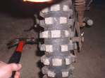
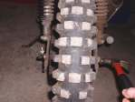

Lots of times we run across cylenders, heads, shafts and the like that are rusted on tight. Other times the idiot that worked on it before you glued it on with gasket cement. To get these parts apart you squrt on the penitrating oil and work the part up and down, back and forth "worrying" it. A dead blow hammer(with lead shot in the head of the hammer) helps or a rawhide mallet. The thing is to do it gently and to keep at it.
I once worked over an hour getting an rusted axle out of a wheel. I got it to move a quarter of an inch, I lubed it some more and hammered it back the other way. Lubed it again. Back the other way. Back and forth, back and forth. Very BORING but I got it out. Go gently, go slow, but keep at it!